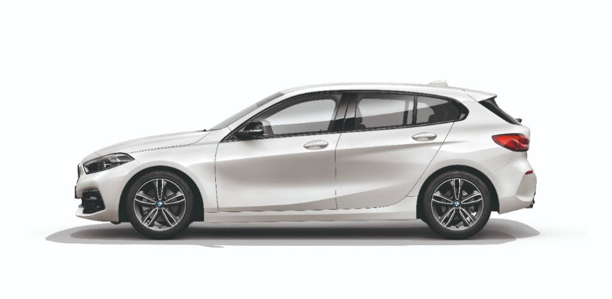

Lucrările de service din BMW Service Inclusive Plus cuprind, pe lângă lucrările de întreţinere obişnuite, şi reparaţiile de uzură conform nevoilor de service. Pachetul BMW Service Inclusive Plus este disponibil doar pentru automobile noi. Kilometrajul sau durata pachetului începe în ziua primei înmatriculări.
Service ulei de motor, inclusiv completare cu ulei
Inspecţie automobil în service conform indicaţiilor BMW
Service filtru aer
Service filtru de combustibil (pentru motoarele diesel)
Service microfiltru
Service bujii (la motoarele pe benzină)
Service lichid de frână
Pe lângă lucrările de întreţinere din pachetul BMW Service Inclusive, varianta „Plus” oferă şi înlocuirea pieselor de uzură
Înlocuirea plăcuţelor de frână de pe faţă şi de pe spate (dacă e necesar)
Înlocuirea discurilor de frână de pe faţă şi de pe spate (dacă e necesar)
Înlocuirea ambreiajului (dacă e necesar, în caz de uzură obişnuită)
Înlocuirea ştergătoarelor (dacă e necesar, max. 1/an contractual)
Pachetele BMW Service Inclusive şi BMW Service Inclusive Plus sunt disponibile şi pentru automobilele electrice şi nu au o limită de kilometraj, ci doar de durată - 4 sau 6 ani, cu posibilitate de prelungire până la 10 ani.
Inspecţie automobil în service conform indicaţiilor BMW
Service microfiltru
Service lichid de frână
Inspecţie automobil în service conform indicaţiilor BMW
Service microfiltru
Service lichid de frână
Schimbarea ştergătoarelor (o dată pe an)
1 set de frâne (discuri de frână şi plăcuţe de frână)
Cu ajutorul calculatorului BMW Service Inclusive vei găsi pachetul de service cel mai potrivit pentru tine şi pentru modelul tău BMW.
Preţul pachetului depinde de modelul BMW, motor şi de durată sau kilometraj.
La alegerea pachetului te rugăm să ai în vedere faptul că BMW Service Inclusive pentru automobilele noi poate fi achiziţionat numai până la primul termen programat pentru service, iar BMW Service Inclusive Plus numai la momentul achiziţionării automobilului.
Gama de servicii:
Întreţinere:
Service ulei de motor, inclusiv completare cu ulei
Service microfiltru
Service filtru de combustibil (pentru motoarele diesel)
Service filtru aer
Service bujii (pentru motoarele pe benzină)>
Service lichid de frână
Verificarea automobilului
Preţurile sunt valabile până la 31.10.2021 (pentru modelele BMW X3, X4, X5, X6 şi X7 valabile până la 30.11.2021) la toţi dealerii şi service-urile autorizate BMW. Preţurile includ TVA 19% şi au fost calculate la un curs valutar de 4,92 lei=1 euro.
Preţurile indicate sunt orientative şi vizează numai modelele de automobile menţionate. Preţurile pot diferi în funcţie de motorizare şi intervalul de service indicat de fiecare automobil. Pentru ofertă personalizată, te rugăm să contactezi partenerul tău BMW.
Găseşte pachetul de service adecvat pentru modelul tău BMW.
Cu ajutorul calculatorului BMW Service Inclusive vei găsi pachetul de service cel mai potrivit pentru tine şi pentru modelul tău BMW. Preţul pachetului depinde de modelul BMW şi de durată sau kilometraj.
BMW Service Inclusive reprezintă o reducere de preţ considerabilă faţă de preţul plătit pentru fiecare lucrare de service separată.
Ai posibilitatea de a selecta unul dintre pachetele BMW Service Inclusive, fiecare cuprinzând un număr diferit de lucrări.
Automobilul tău este menţinut în stare excepţională graţie continuităţii istoricului BMW Service.
BMW Service Inclusive este valabil în toată lumea, în toate atelierele de service BMW partenere şi în toate atelierele de service BMW autorizate.
Know-how-ul BMW Service şi componentele BMW originale – la un preţ de pachet atractiv, protejându-te, astfel, de creşterile viitoare de preţuri.
BMW Service Inclusive este transferat automat asupra persoanei noului proprietar şi asigură menţinerea valorii automobilului.
Piesele şi uleiurile de motor BMW originale folosite în service corespund specificaţiilor înalte ale BMW.
Începând din ziua comenzii pachetului BMW, ai dreptul de a beneficia de toate lucrările de service incluse în pachetul respectiv.
Cu BMW Service Inclusive şi BMW Service Inclusive Plus găseşti pachetul potrivit, respectiv pentru combinaţia cea mai bună pentru tine dintre durată (exprimată în ani) şi distanţă (exprimată în kilometri). Dar totodată flexibil: poţi extinde oricând un pachet BMW Service Inclusive deja achiziţionat – adică poţi extinde durata acestuia şi/sau kilometrajul. Un upgrade de la BMW Service Inclusive la BMW Service Inclusive Plus, precum şi extinderea unui pachet BMW Service Inclusive Plus sunt posibile în cazul unui automobil nou. Vei plăti numai diferenţa dintre pachetul deja achiziţionat şi noul pachet.
BMW Service Inclusive şi BMW Service Inclusive Plus sunt disponibile până la o vechime a autoturismului de maximum 6 ani şi până la un kilometraj de maximum 120.000 km. Prelungirea duratei şi a kilometrajului este posibilă în cazul unui pachet deja achiziţionat până la o vechime de maximum 7-10 ani a automobilului şi până la un kilometraj de maximum 200.000 km. În cazul prelungirii duratei, vei plăti numai diferenţa dintre pachetul achiziţionat şi noul pachet, potrivit listei de preţuri valabile în ziua comenzii. Pachetul BMW Service Inclusive Plus nu poate fi prelungit după achiziţionare.
Premisa pentru suportarea costurilor este ca automobilul să fie utilizat conform, să nu fie suprasolicitat (de exemplu, din cauza folosirii lui în cursele de maşini) şi să fie respectate intervalele de mentenanţă indicate în bordul automobilului (referitoare la schimbul de ulei, filtrul de aer, microfiltru, bujii şi lichidul de frână) respectiv perioada/kilometrajul indicat de producător (pentru inspecţia automobilului).
| Contact | Link-uri rapide | Descoperă BMW | Mai multe link-uri |
|---|---|---|---|
| Contactează-ne | Configurator | Despre noi | Date companie |
| Găseşte un partener BMW | Solicită un test drive | Electromobilitatea BMW | Termeni şi condiţii My BMW Portal |
| Descarcă broşuri şi liste de preţuri | BMW Plug-in Hybrid | ||
| Programare service | BMW i | Campanii tehnice BMW | BMW M | BMW Financial Services | Segmentul de lux BMW | Motociclete BMW | BMW.com | Cariere |